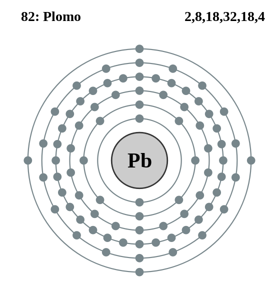

|
|
||
|
PLOMO Se sabe que el plomo nativo es uno de los metales más antiguos y es poco frecuente que aparezca de manera natural. Los minerales con plomo más frecuentes son la galena, la anglesita, la cerusita y el minio. El plomo es brillante, de color blanco azulado y muy blando. Es muy maleable, dúctil y conduce la electricidad de manera deficiente. El plomo natural es una mezcla de cuatro isótopos estables, todos procedentes de la desintegración de elementos radioactivos naturales. El metal se usa en soldaduras, cobertura de cables, fontanería y municiones, y como escudo contra la radiación en equipos de rayos X y reactores nucleares. Los compuestos del plomo se usan en baterías, pinturas, cristal y en vidrio flint. Asimismo, es un tóxico acumulativo y debe manipularse con precaución. |
 |
DATOS Número Atómico: 82 Peso Atómico: 207.2 Electronegatividad: 2,33 Configuración Electrónica: [Xe]4f145d106s26p2 Estados de Oxidación: +2,4 No. de Electrones de Valencia: 4 |